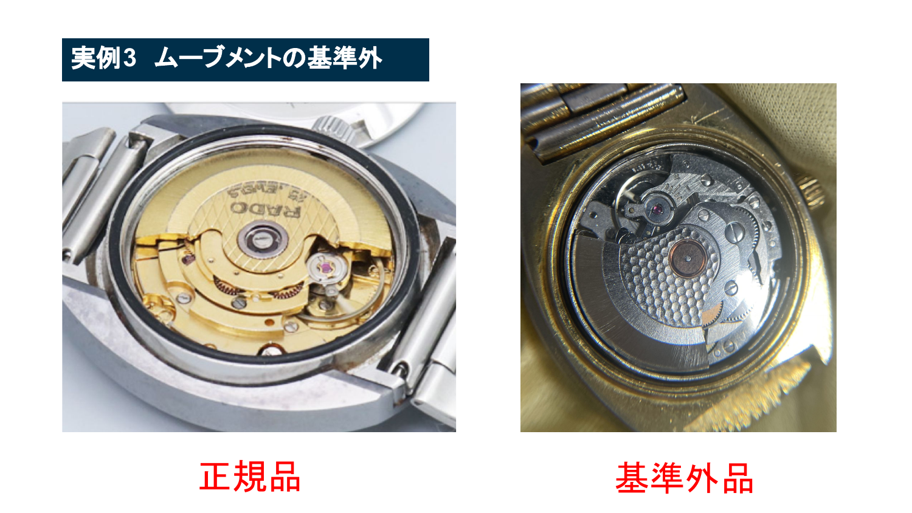
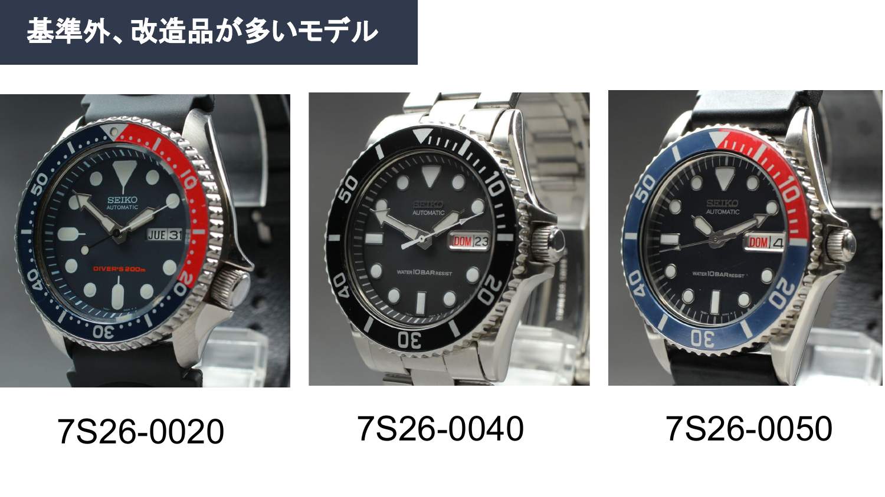
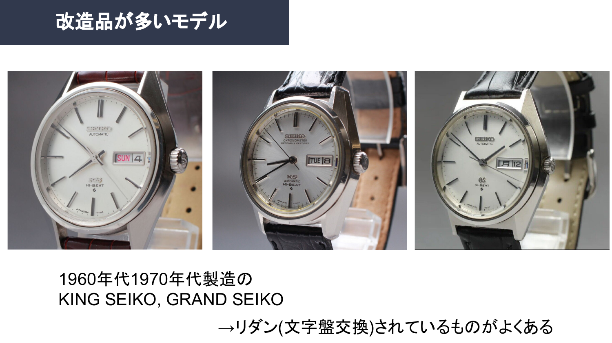

型番で止める
要注意型番に当てはまったら、相場が良くても即仕入れず追加確認。
初心者が最初に避けるべきモデル群を整理しました。安く見えても、説明できない個体は仕入れ対象から外します。
改造品や基準外品が多いモデルは、利益候補に見えても確認コストが高くなります。初心者は、判断が難しい領域を先に避ける方が安全です。
素材PDFの該当ページを画像化しています。



要注意型番に当てはまったら、相場が良くても即仕入れず追加確認。
古いKS/GSはリダンの可能性を考え、ロゴ、インデックス、印字を見る。
購入者に説明できない不安が残る場合は、次の商品へ移ります。
避けるべき商品を理解したら、最初に狙いやすいブランドを整理します。